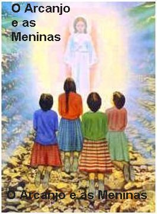
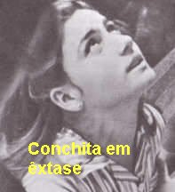
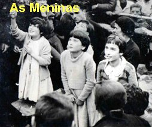
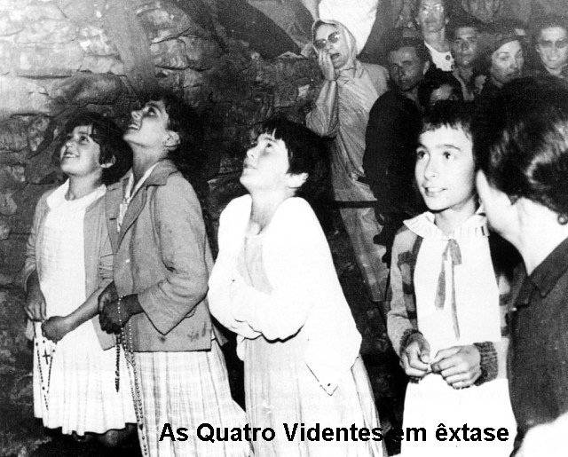
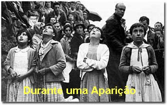

INICIO DOS ACONTECIMENTOS
AS MENINAS BRINCAVAM
Era domingo à tarde
do dia 18 de Junho de 1961, quando Conchita e mais três amigas: Mari Cruz, Jacinta e Loli,
que tinham quase a mesma idade (12 e 
Como parte das brincadeiras decidiram “fazer uma visita” a plantação de maçãs da senhora Concesa. E não perderam tempo. Lá chegando, tanto comiam as maçãs, como enchiam os bolsos. No auge da “colheita”, o esposo da proprietária viu os ramos das macieiras se agitarem e disse a esposa:
- “Deve ser as abelhas”!
Dona Concesa respondeu:
- “Então vai lá e vê o que está acontecendo”!
As meninas que já não tinham mais nenhum espaço nos bolsos, pois já estavam cheios de maçãs, saíram “na pontinha dos pés”, dando gostosas risadas. E assim, alcançaram o caminho que liga o povoado ao “bosquezinho dos Nove Pinheiros” (também chamado de Calleja, e também Pinheirais). Entretidas e andando calmamente, comiam as maçãs, quando de repente, ouviram um forte ruído, como se fosse um trovão. Comentaram entre si:
- “Parece que está trovejando”. (Eram 20:30 horas da noite. Como estava no período do verão, o tempo continuava claro e somente agora, o sol começava a se esconder no horizonte)
Assim que terminaram de comer as maçãs, Conchita falou:
- “Ah! Que belas trapaceiras somos nós! Agora que comemos as maçãs que não eram nossas, o demônio deve estar muito satisfeito conosco e dando belas gargalhadas, enquanto o nosso Anjo da Guarda deve estar muito triste com tudo isto”!
Imediatamente, as quatro meninas colheram pedras e as atiraram com toda força, no lado esquerdo do caminho, dizendo que o demônio estava ali. Na concepção delas, do lado direito estava o Anjo da Guarda, triste e sério, por causa do procedimento delas. Cansadas de jogar pedras, sentaram-se e ficaram se distraindo com um “jogo de pequenas pedrinhas” . De súbito, apareceu uma figura muito bonita cercada de um maravilhoso esplendor, que brilhava com uma luz muito resplandecente, mas que não afetava a visão. Com o susto do inesperado as meninas gritaram:
- “Ai! É um Anjo”! E permaneceram em silêncio.
O Anjo não disse nenhuma palavra, apenas olhou para as meninas e depois de um pequeno espaço de tempo, desapareceu.
Elas muito assustadas correram para a Igreja do povoado. Encontraram uma amiga de nome Pili Gonzáles, que as observando agitadas, perguntou:
- “Vocês estão tão pálidas e assustadas! O que aconteceu? Porque estão assim”?
As meninas meio envergonhadas, pois se lembraram que tinham “subtraído” as maçãs da horta de Dona Concesa, disseram:
- “Estamos assim de comer maçãs”! (A Visão parece ter acentuado nelas certo remorso e um grande arrependimento, pela falta cometida)
A amiga retrucou:
- “Por isso, vocês estão assim”?
As quatro meninas responderam ao mesmo tempo:
- “É que vimos um Anjo”!
- “De verdade”?
- “Sim, de verdade. Por isso estamos indo em direção a Igreja!”.
Mas chegando a Igreja, ficaram sem coragem de entrar, e foram para trás do Templo e ficaram chorando. Algumas pessoas que passavam por ali, e vendo que as meninas choravam, se aproximaram e perguntaram:
- “Porque estão chorando”?
- “Porque vimos um Anjo”.

- “Filhas minha, é verdade que viram um Anjo”?
- “Sim senhora”.
- “Será que não foi à imaginação de vocês”?
- “Não senhora, vimos muito bem um Anjo”!
Então disse a Professora e Administradora da Igreja:
- “Vamos rezar uma Estação a JESUS Sacramentado em ação de graças. (A Estação é uma prática espanhola de devoção a Eucaristia. Consiste em rezar 6 PAIS NOSSO + 6 AVES MARIA + 6 GLÓRIA + 1 CREDO. Geralmente acrescentam no final 1 SALVE RAINHA).
Quando terminaram, foram para as suas casas, pois já passava das 21 horas, e escurecia.
Quando Conchita chegou a casa, levou “um pito” da sua mãe:
- “Não lhe disse para chegar antes do anoitecer”?
Ela muito assustada, contou tudo com detalhes a sua mãe, afirmando:
- “Mamãe eu vi um Anjo”.
A mãe não acreditou e não levou o assunto a sério. Pensou que fosse uma “mentirinha” como forma de desculpa pela filha ter atrasado.
No dia seguinte, 19 de Janeiro, a noticia se espalhou rapidamente no lugarejo, chegando ao conhecimento de todos. As pessoas faziam as mais incríveis hipóteses para justificar o acontecimento: “Deve ter sido um pássaro bem grande”! “Não, era à sombra de uma nuvem, com certeza”! Diziam outras pessoas. E muitas outras ficavam rindo e caçoando das meninas, julgando que fosse uma invenção, ou uma nova brincadeira.
As quatro jovens foram para a Escola às 10 horas e lá, a Professora voltou a inquiri-las, perguntando:
- “Vocês estão seguras daquilo que me disseram ontem”?
- “Sim senhora, nós vimos um Anjo”.
Terminada as aulas, elas foram para as suas casas, mas a Jacinta e a Mari Cruz saíram juntas e se encontraram com o Pároco Dom Valentim Marichalar. (Na verdade ele era Pároco no povoado vizinho, Cosío, e era encarregado do Campanário de San Sebastian de Garabandal).
O Padre perguntou:
- “É verdade que vocês viram um Anjo”? Elas confirmaram:
- “Sim senhor”.
- “Será que vocês não se enganaram”?
Elas responderam sorrindo com simplicidade:
- “Padre, não tenha receio de crer, porque nos vimos um Anjo”! E seguiram para as suas casas.
O Padre ainda preocupado e com dúvidas, foi procurar Conchita e perguntou:
- “Conchita, seja sincera, o que você viu ontem à noite”?
Ela lhe explicou tudo minuciosamente. Ele então disse:
- “Se hoje ele lhe aparecer, pergunte: quem ele é e o que deseja”?
Em seguida o Padre foi à casa de Loli
para checar, a fim de observar se as informações coincidiam. Loli repetiu tudo, exatamente do mesmo modo.
O 
- “Vamos aguardar para ver se ocorrem outras Aparições e se Aquela Figura diz alguma coisa. Então, se algo acontecer de concreto, eu falarei com o senhor Bispo”.
As meninas foram para as suas casas almoçar, pois às 14 horas tinham que voltar a Escola. Terminadas as aulas, regressaram aos seus lares.
Na casa dos pais da Conchita estavam fazendo uma pequena reforma. Lá estava o pedreiro José Diez Cantero, apelidado de Pepe Diez, com Aniceto Gonzáles que era irmão da menina e servia de ajudante de pedreiro. Conchita pediu autorização a sua mãe para ir com as outras companheiras, rezar na “Calleja” (era o local que gostavam de permanecer e onde lhes apareceu o Anjo). O irmão para implicar com ela, disse:
- “Mamãe, não deixe a Conchita ir rezar na Calleja, o povo vai ficar rindo e caçoando da gente”.
A mãe coitada, ficava ainda mais aflita e nervosa, falando e resmungando. Mas quando chegaram as outras meninas, depois de muitas recomendações, ela permitiu que a filha Conchita também fosse. O maior argumento de Conchita era simples e demolidor:
- “Mamãe, nós vamos lá somente rezar e pedir a proteção da VIRGEM”.
Ao passarem pelo povoado as pessoas riam e perguntavam, aproveitando a inocência das meninas:
- “Aonde vocês vão”?
E elas, na simplicidade de seus 11 e 12 anos de idade, diziam:
- “Vamos rezar na Calleja”.
Eles então replicavam, sempre rindo e caçoando:
- “Mas porque vocês não vão rezar na Igreja”?
Elas respondiam:
- “Porque ontem nos apareceu um Anjo e temos a esperança de que ele volte e nos apareça outra vez”.

- “Vocês foram a Calleja”?
As meninas responderam que sim, mas disseram que estavam muito tristes porque o Anjo não tinha aparecido. Carinhosamente a Professora querendo consolar as crianças disse:
- “Não se preocupem. Sabe por que o Anjo não veio? Porque está muito nublado e ameaçando chuva”.
O ARCANJO CONFIRMA SUA PRESENÇA
Eram 20:30 da noite, e elas decidiram fazer uma visita ao Santíssimo Sacramento na Igreja e depois regressaram as suas casas.
Chegando a casa, a mãe de Conchita lhe perguntou se o Anjo tinha aparecido. Ela respondeu que não. Mas na verdade, ela encarou o acontecimento de modo natural. Cuidou de seus afazeres como sempre fazia, jantou e foi dormir as 21:45 horas. Todavia, como não estava conseguindo dormir, começou a rezar. E então, ouviu uma voz que lhe disse:
- “Não se preocupe, porque voltará a me ver”.
Esta mesma voz, conforme conversaram no dia seguinte, dia 20 de Junho, todas elas, estando em suas casas, também ouviram. Decidiram não comentar o assunto da voz com ninguém. Assim, o povo do lugarejo começou a imaginar que foi mesmo ilusão das meninas, porque o Anjo não apareceu, e decidiram então, não se importarem mais com elas. Por seu lado, as meninas continuaram com o seu ritmo normal de atividade de todos os dias: foram as aulas e assumiram os serviços em suas casas.
Na tarde do dia 20 de Junho, concluídas as aulas e os serviços nas suas casas, elas pediram as suas mães, que queriam voltar a “Calleja”. A mãe de Conchita não concordou que ela fosse, e disse isto, diante das três outras meninas, quando estas chegaram à casa da amiga, a fim de juntas seguirem para rezar no local predileto. As meninas e Conchita insistiram com a mãe dela, mas a senhora Aniceta não cedeu e mandou que as três seguissem sozinhas. Conchita ficou inconsolável, e ali triste as amigas permaneceram em completo silêncio. Passados alguns minutos, a senhora Aniceta voltou à sala, onde estavam as meninas, e falou:
- “Está bem, está bem. Eu deixarei a Conchita ir, se vocês fizerem o que eu decidir. Vocês três vão sozinhas a Calleja, sem dizer nada a ninguém, como se fossem jogar pedrinhas em qualquer lugar. Depois de um curto espaço de tempo, para que ninguém perceba, a Conchita irá às escondidas, encontrá-las no local combinado”.
Conchita confirmou as companheiras:
- “Vão que eu irei logo em seguida”.
E assim aconteceu. Logo depois de
um curto espaço de tempo, as quatro meninas estavam juntas na “Calleja”. E rapidamente, de joelhos, iniciaram a 
O sacerdote que atendia ao povoado, Padre Dom Valentim Marichalar, residia em Cosío, e havia pedido as meninas, que lhe comunicasse qualquer novidade que acontecesse. Mas caminhar 5 quilômetros era muito distante para elas, crianças com apenas 11 e 12 anos de idade, os seus pais não iriam permitir. Por isso elas decidiram e sempre contavam tudo aos pais, a fim de que eles fossem a Cosío e transmitisse as noticias ao Padre Marichalar.
No dia 21 de Junho o povo estava mais tranquilo, cada um ocupado com os seus afazeres e provavelmente ainda com dúvidas, sobre a ocorrência com as quatro meninas. Por outro lado, elas também, seguiam sua vida normal. Concluídos os compromissos do dia, à tarde pediram autorização aos pais para irem rezar na “Calleja”. Os pais consentiram e elas seguiram o caminho. Percebendo que ninguém estava preocupado com elas, imaginando que fosse uma grande mentira tramada pelas quatro, decidiram convidar uma senhora Clementina González para acompanhá-las nas orações. A senhora Clementina aceitou, mas quis levar à senhora Concesa (proprietária do pomar de maçãs) como companhia. Outras pessoas que observavam também decidiram acompanhá-las. Chegaram a “Calleja” e rezaram o Terço, mas o Anjo não apareceu. Então as pessoas presentes riam muito e faziam mofa dizendo as meninas que rezassem “Uma Estação”, a fim de dar tempo para o Anjo chegar. E assim elas fizeram, ajoelhadas e com muito fervor rezaram a “Estação”. Quando terminaram de rezar a Salve Rainha, o Anjo apareceu majestoso e belo. As meninas entraram em êxtase e o povo presente, percebendo que algo de maravilhoso estava acontecendo, ficou arrependido de terem zombado delas, e choravam e pediam perdão a DEUS por não ter acreditado e pelo comportamento inconveniente. Terminada a Aparição, todos voltaram ao povoado impressionados, convencidos de que o sobrenatural ali tinha se manifestado, e a noticia se espalhou, chegando rapidamente até o Padre.